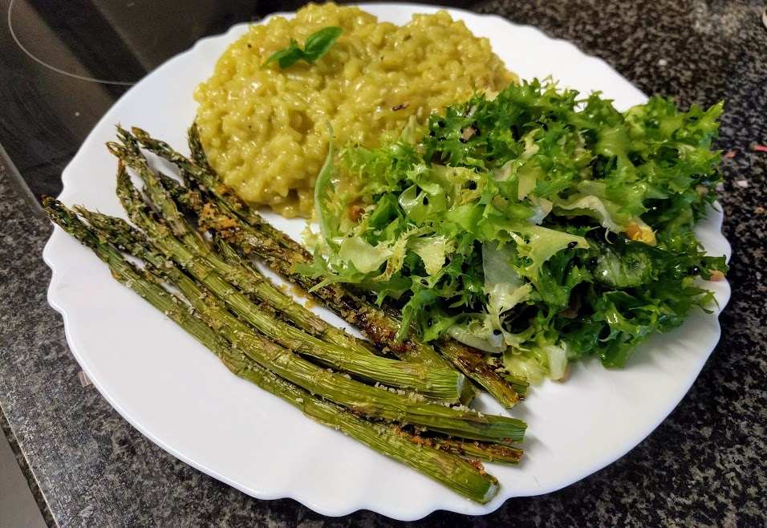

Risotto tout vert

Ici avec des [asperges rôties](AspergesRoties.html)
Pour quatre mangeurs solides :
- Une botte d'asperges
- Un oignon
- Une gousse d'ail
- 100g de roquette
- 300g de riz à risotto
- 10ml de vin blanc sec
- Un cube de bouillon de légumes
- Sel, poivre, huile d'olive
- Laver les asperges, les couper en tronçons de 5cm environ, les faire cuire dans de l'eau bouillante pendant 5 minutes, puis les égoutter.
- Hacher l'ail, laver la roquette, et les mixer avec 10cl d'huile d'olive pour obtenir une sorte de pâte.
- Faire chauffer un litre d'eau avec le cube de bouillon, garder au chaud une fois que c'est dissous.
- Éplucher et couper l'oignon en jolies lamelles, puis le faire revenir au fond d'un gros poêlon dans de l'huile d'olive, à feu doux.
- Verser le riz, le faire revenir rapidement, puis ajouter le vin blanc et mélanger.
- Une fois que le vin a été absorbé, commencer la vraie cuisson du risotto : à feu assez fort, mettre une louche de bouillon dans le poêlon, mélanger jusqu'à ce que ça ait été absorbé, et recommencer jusqu'à ce qu'il n'y ait plus de bouillon. Le riz doit être tendre.
- Ajouter les légumes et le pesto de roquette, saler, poivrer, poursuivre la cuisson quelques minutes, et servir bien chaud.